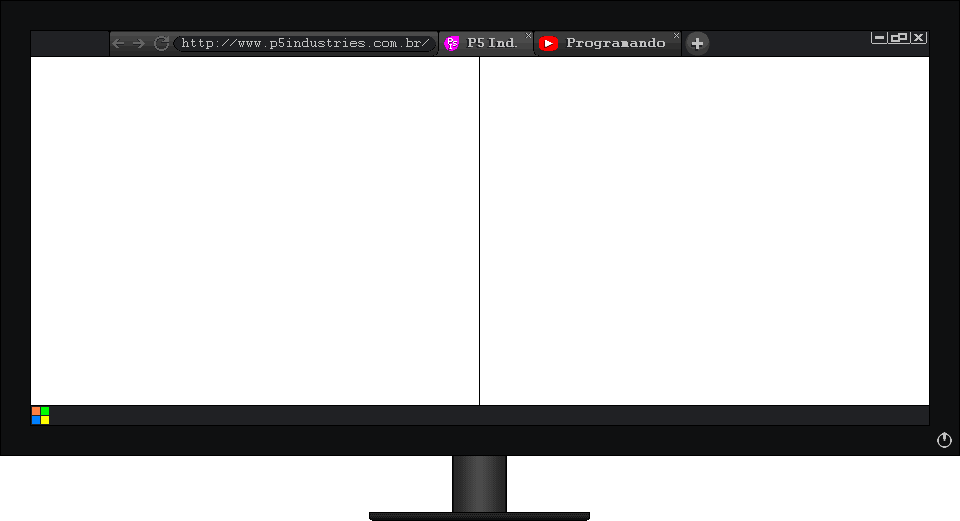
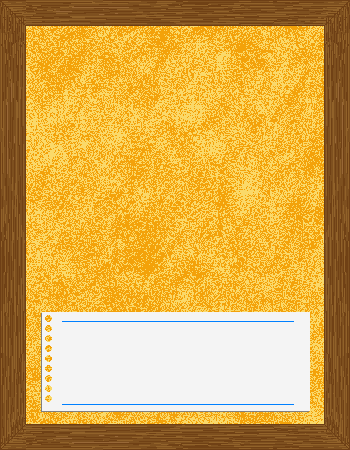

 
/* COMECE POR AQUI */ var sprite, obstacle = [], box, objetivo; function setup(){ iniciar(); } function draw(){ background(255); drawSprites(); verifica(box, objetivo); } /* NAO MODIFIQUE ESSA PARTE */ var sprite, obstacle = [], box, objetivo; function iniciar(){ createCanvas(435,330); obstacle[0] = createSprite(217, 10,435, 20); obstacle[1] = createSprite(10, 165, 20, 330); obstacle[2] = createSprite(217, 320, 435, 20); obstacle[3] = createSprite(425, 165, 20, 330); obstacle[4] = createSprite(75,10, 20, 330); obstacle[5] = createSprite(145,250, 20, 330); sprite = createSprite(300, 200, 25, 25); box = createSprite(200, 100, 25, 25); objetivo = createSprite(40, 40, 25, 25) } function verifica(box, objetivo){ var botao; if(box.overlap(objetivo)) { botao = createButton('Próxima Fase'); botao.mousePressed(next); objetivo.remove(); } } function next(){ window.open('https://msajt.github.io/fase1/editor.html', '_self'); }